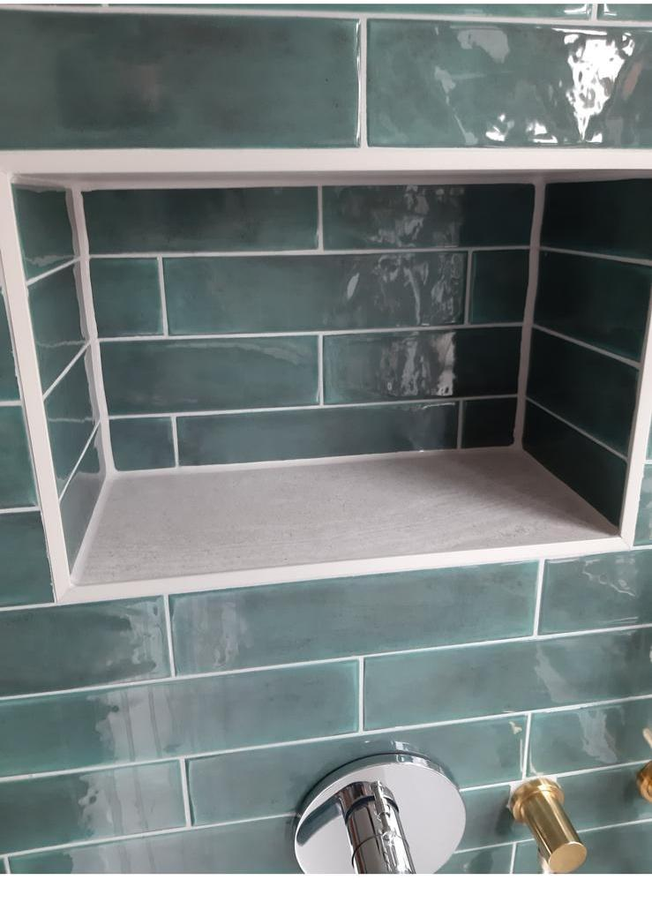
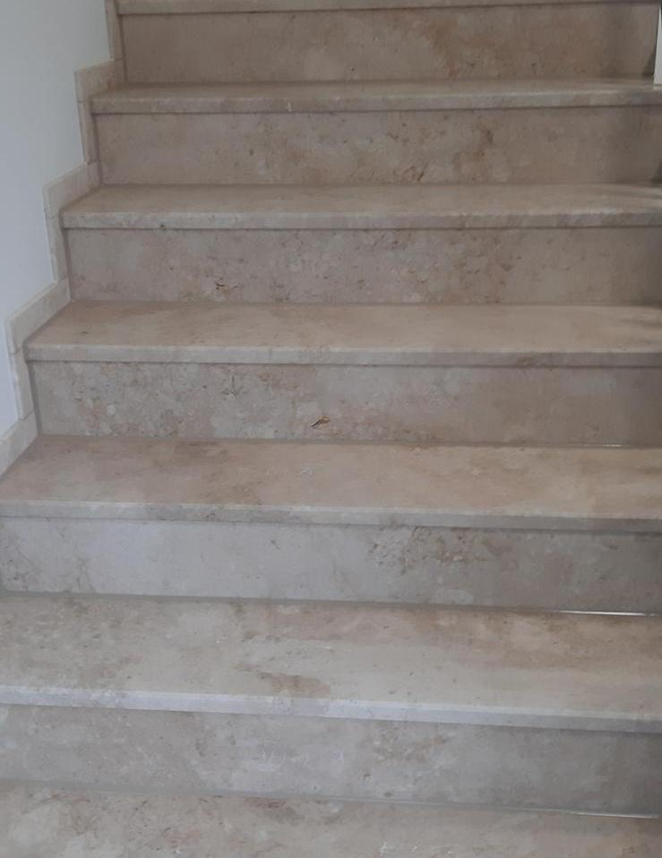

Silikonfugen Dusche Fugensanierung
Fugensanierung
Naturstein & VersiegelungSilikon-, PU- & Sanierungsfugen vom zertifizierten Fugenmeister Ibrahim Korkmaz – in Tornesch, im Kreis Pinneberg und in Hamburg.

Silikonfugen DuscheFugensanierung
Naturstein & VersiegelungVom einzelnen Silikonanschluss bis zur gewerblichen Spezialfuge.
Dusche, Wanne, Waschbecken, Küche & Fenster – sauber neu gezogen.
Mehr erfahren →Gute Arbeit, Zuverlässigkeit und Pünktlichkeit stehen bei uns an erster Stelle – überzeugen Sie sich selbst.
Schicken Sie ein Foto der betroffenen Stelle – wir melden uns schnell mit einer Einschätzung.